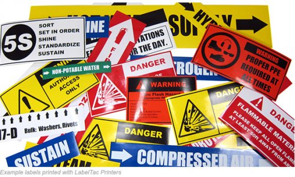

Stickers
Wat zijn Stickers?
Definitie
Stickers zijn zelfklevende stukken papier, vinyl of ander materiaal, vaak bedrukt met een ontwerp, logo of boodschap. Ze worden gebruikt voor een breed scala aan toepassingen, van promoties en branding tot decoratie en identificatie.
Voordelen van Stickers
- Veelzijdigheid: Stickers kunnen op vrijwel elk oppervlak worden aangebracht en zijn geschikt voor binnen- en buitengebruik.
- Kostenbesparend: Ze zijn een betaalbare manier om branding of informatie te verspreiden.
- Aanpassing: Stickers kunnen in allerlei vormen, maten en ontwerpen worden aangepast om aan specifieke behoeften te voldoen.
Toepassingen van Stickers
Stickers worden vaak gebruikt voor:
- Promotionele doeleinden: Voor het verspreiden van merkboodschappen en aanbiedingen.
- Verpakking: Als verzegelings- of merkstickers op producten en verpakkingen.
- Decoratie: Voor het personaliseren van laptops, telefoons, meubels, enzovoort.
- Etikettering: Voor het identificeren of classificeren van producten en materialen.
Hoe Werkt het Bedrukken van Stickers?
Het proces van het bedrukken van stickers begint met het selecteren van het juiste materiaal en de lijmsoort, afhankelijk van de toepassing. Vervolgens wordt het ontwerp digitaal geprint of gestanst in de gewenste vorm. Stickers kunnen worden afgewerkt met een beschermende laag, zoals een UV-coating, om de duurzaamheid te vergroten.
Belangrijke Overwegingen bij Stickers
- Materiaalkeuze: Kies een materiaal dat geschikt is voor het beoogde gebruik (bijvoorbeeld waterbestendig voor buitenstickers).
- Lijmsoort: Afhankelijk van de toepassing kan een permanente of afneembare lijm worden gebruikt.
- Afwerking: Overweeg extra afwerkingen zoals laminering voor extra duurzaamheid of een matte/glanzende uitstraling.